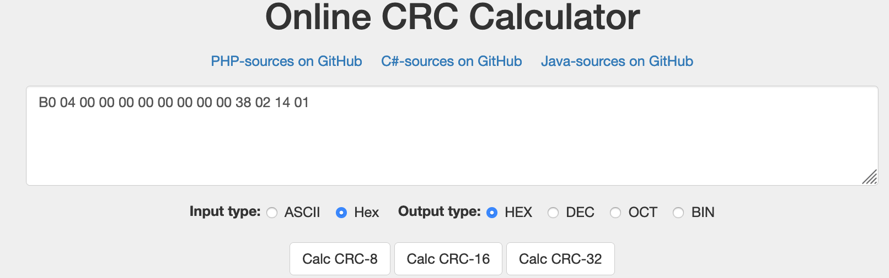
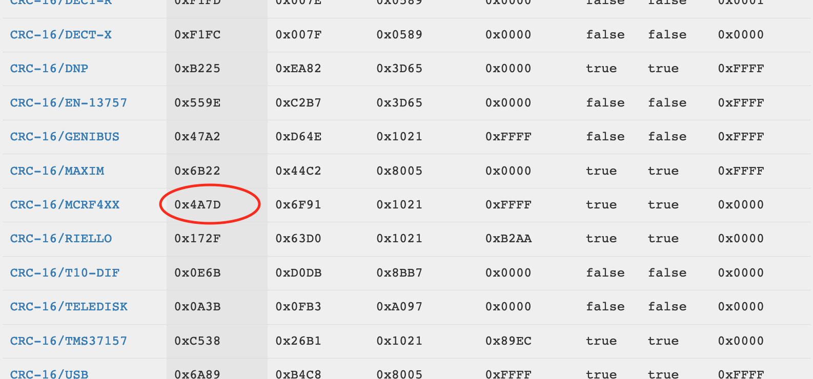

It is certainly not the first article on this topic and probably not the last either, but I have noticed that in the various articles there is always something missing or taken for granted. In this article I would also like to tell about my particular journey.
Goal
The goal is to describe the process of hacking an NFC cards.
These cards are used for access control in various fields (bus, car keys, hotel). In my specific case it is a laundry card for the use of washing machines and dryers on my university campus and my goal is to change the balance on my card.
First of all, there are more types of cards and the one I will go into today are the most widespread, as well as the cheapest and vulnerable. I'm talking about MIFARE high-frequency NFC cards, in fact they were exploited more than 10 years ago but are still widely used.
What you need
- NFC reader/writer (PN531/532/533). You can easily find it on the internet. I used ACR122U.
- Kali Linux (it's not necessary but it makes it easier). You can run it "live" from a USB drive (guide). Alternatively you can use some linux distro.
Let's do
First let's start Kali Linux and connect to the internet. Open the terminal and execute the following commands.
sudo su
apt update
apt install libnfc-bin
apt install mfoc
git clone https://github.com/nfc-tools/miLazyCracker
Now let's go into the "miLazyCracker" folder and edit the file "miLazyCrackerFreshInstall.sh" with any text editor.
You have to replace the lines:
[ -f craptev1-v1.1.tar.xz ] || wget http://www2.vaneay.fr/mifare/craptev1-v1.1.tar.xz
[ -f crapto1-v3.3.tar.xz ] || wget http://www2.vaneay.fr/mifare/crapto1-v3.3.tar.xz
to
[ -f craptev1-v1.1.tar.xz ] || wget http://privat.bahnhof.se/wb736562/rfid/crypto1/craptev1-v1.1.tar.xz
[ -f crapto1-v3.3.tar.xz ] || wget http://privat.bahnhof.se/wb736562/rfid/crypto1/crapto1-v3.3.tar.xz
save and close!
Now plug in your NFC reader and run
modprobe -r pn533_usb
Install miLazyCracker
./miLazyCrackerFreshInstall.sh
Now you can run the program
miLazyCracker
Now the program starts "brute-force" (It's not pure brute-force, but exploits a vulnerability) on the keys of the card sectors. Don't worry if it takes a while. It's normal for it to take about 10-60 minutes.
Finally the program dumps the card to file *.mfd and asks if you want to clone. If you want to clone to another tag immediately, exchange the tag on the reader with the new tag and submity y, otherwise submit n.
At this point you have your card dump, you can restore your card at this time as many times as you want or clone it to other cards.
For example, if the card has a balance of $50, you can use up the credit and then restore it to its dump state with the balance of $50.
If you want to write the dump:
nfc-mfclassic w a dump.mfd dump.mfd
Let's do better
Honestly, that's not good enough for me. So I tried to read and understand the various sectors of the dump to understand their meaning and try to change the balance.
A great program to view and edit dumps is 010Editor available here
.
After installing it, you can open the dump.mfd and view its contents. You will see a lot of values in hexadecimal format. There are 16 sectors and each sector consists of 4 lines. In the first 2 sectors there is usually information about the card or company that produced it, and the last line of each sector corresponds to the reading and writing keys of each sector.
Find the balance
The goal is to make sense of these bytes in order to figure out what to change.
To do this you can look for some specific value. Obviously all bytes are presented in hexadecimal so it would make no sense to look for your balance in decimal form. I, for example, knowing my balance, started with this. My balance was $14.00 so I started by converting 1400 into hexadecimal. If you don't know how to convert it or you don't like it you can use a converter (it won't be hard to find it on the web).
1400 --> 0578.
Searching the dump values I found the same inverted values in the first two bytes of the second line of the third sector. Intuitively I saw the similarity with the first line and doing the inverse transaction I noticed that it corresponds to the balance before the last transaction (16$)
40 06 00 00 00 00 00 00 00 00 11 02 14 00 47 90
78 05 00 00 00 00 00 00 00 00 11 02 14 01 32 13
So I tried to change the value to another balance ($60) like this:
6000 --> 003C.
40 06 00 00 00 00 00 00 00 00 11 02 14 00 47 90
70 17 00 00 00 00 00 00 00 01 11 02 14 01 32 13
I saved and wrote the modified dump on the card...
nfc-mfclassic w a editedDump.mfd editedDump.mfd
I tried the card in the laundry room, but "din din din din!" and red light was the reply. Apparently, the washing machine detected something weird!
Apparently, the washing machine picked up something weird. So I rewrote the card with the dump unmodified and re-tested the card.Everything worked properly!
Reverse the checksum
That made me realize there's some kind of cheksum, so I tried to figure out what the other bytes meant. Since I did another transaction with the card and the credit should be changed, I reread the card to see if there was any change. This time I didn't use myLazyCracker, since I know the keys, but simply:
nfc-mfclassic r a input.mfd output.mfd
where "input.mfd" corresponds to the previously made dump (containing the read and write keys) , and "output.mfd" corresponds to the name of the new dump
No sector except the third one has changed! In fact, only the first two lines of the third sector have changed...
78 05 00 00 00 00 00 00 00 00 11 02 14 01 32 13
B0 04 00 00 00 00 00 00 00 00 38 02 14 01 7D 4A
And it is immediately noticeable that the second line has become the first line and the bytes in position 11-13, which before were equal between the two lines, have now changed.
After having translated them into decimal it was easy to understand that these values corresponded to the date when the transaction was done. The value at position 14 could be a daily operations counter. But the last two bytes are completely anonymous. Those two bytes are probably checksums of some kind.
So I try to see if they are the result of some operation (XOR,OR,AND,+,-,*,/) on the other bytes, but I don't find any matching value (I still suggest you try your dump). I don't get down, I look for some checksum note functions on the web, until I try the cyclic redundancy check (CRC).
There are many types of algorithms for CRC, so I look for a computer online, and I find this great site that allows you to calculate the most famous CRC algorithms.

So I entered all the bytes of a line except the last two and clicked on "Calc CRC-16" because in my case the checksum was probably 2 bytes, so 16 bits. You can try different and more appropriate types of CRC. Anyway on the site is shows the list of cheksum and... Kaboom! Here is the correct checksum!

Once I found the right checksum I just had to change the balance, calculate the checksum (in my case CRC-16/MCRF4XX ) and rewrite the whole line like this
70 17 00 00 00 00 00 00 00 00 38 02 14 01 EB DB
And that’s it!